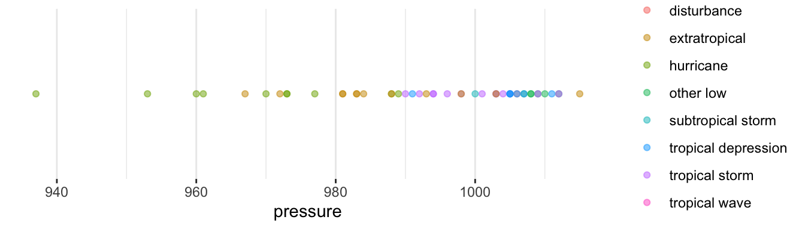
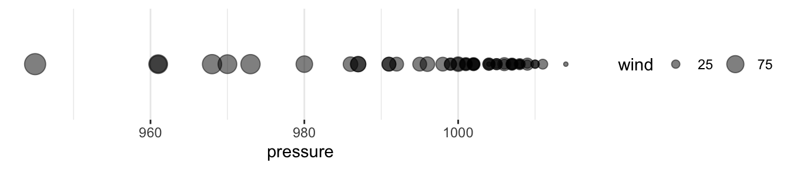
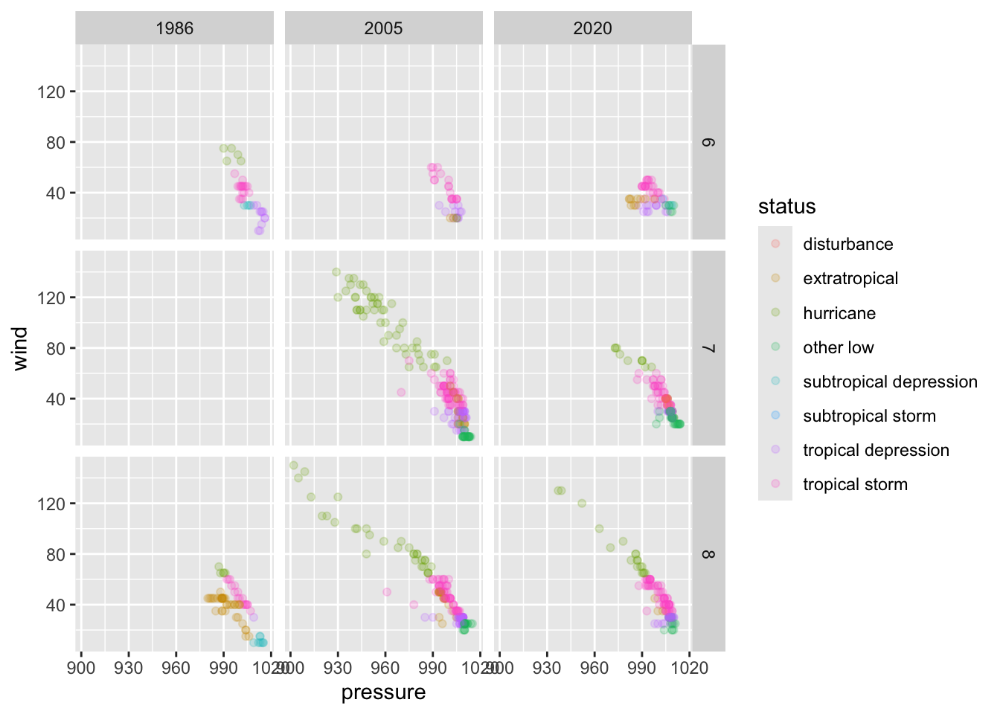

| name | year | category | lat | long | wind | pressure |
|---|---|---|---|---|---|---|
| Felix | 1989 | NA | 19.1 | -24.6 | 50 | 996 |
| Fabian | 1985 | NA | 31.8 | -47.0 | 55 | 994 |
| Ingrid | 2013 | NA | 19.6 | -94.6 | 30 | 1002 |
| Frances | 2004 | 1 | 27.4 | -80.7 | 80 | 969 |
| Arthur | 1984 | NA | 16.9 | -59.1 | 30 | 1012 |
| Omar | 2020 | NA | 36.1 | -69.3 | 35 | 1003 |
| Marilyn | 1995 | 1 | 27.2 | -69.3 | 80 | 966 |
| Arlene | 1987 | NA | 33.0 | -63.6 | 50 | 1002 |
| Danielle | 2004 | 2 | 16.0 | -34.8 | 90 | 970 |
| Hugo | 1989 | 2 | 21.6 | -68.0 | 90 | 964 |
4 Data Visualization with ggplot2
Abstract
This chapter introduces ggplot2, the tidyverse’s wildly popular data visualization package.
4.1 Motivation
- Data visualization is exploratory data analysis (EDA)
- Data visualization is diagnosis and validation
- Data visualization is communication
4.2 Motivation (going beyond Excel)
- Flexibility
- Reproducibility
- Scalability
- Relational data vs. positional data
4.3 Background
- The toughest part of data visualization is data munging.
- Data frames are the only appropriate input for
library(ggplot2).
ggplot2 is an R package for data visualization that was developed during Hadley Wickham’s graduate studies at Iowa State University. ggplot2 is formalized in A Layered Grammar of Graphics (Wickham 2010).
The grammar of graphics, originally by Leland Wilkinson, is a theoretical framework that breaks all data visualizations into their component pieces. With the layered grammar of graphics, Wickham extends Wilkinson’s grammar of graphics and implements it in R. The cohesion is impressive, and the theory flows to the code which informs the data visualization process in a way not reflected in any other data viz tool.
There are eight main ingredients to the grammar of graphics. We will work our way through the ingredients with many hands-on examples.
4.4 Eight Ingredients in the Grammar of Graphics:
4.4.1 Data
Tip
Data are the values represented in the visualization.
ggplot(data = ) or data |> ggplot()
4.4.2 Aesthetic Mappings:
Tip
Aesthetic mappings are directions for how data are mapped in a plot in a way that we can perceive. Aesthetic mappings include linking variables to the x-position, y-position, color, fill, shape, transparency, and size.
aes(x = , y = , color = )
X or Y

Continuous Color or Fill

Discrete Color or Fill

Size

Shape

Others: transparency, line type
4.4.3 Geometric Objects:
Tip
Geometric objects are representations of the data, including points, lines, and polygons.
geom_bar() or geom_col()
Plots are often called their geometric object(s).

geom_line()
Warning: Removed 2 rows containing missing values or values outside the scale range
(`geom_line()`).
geom_point()
Aesthetic mappings like x and y almost always vary with the data. Aesthetic mappings like color, fill, shape, transparency, and size can vary with the data. But those arguments can also be added as styles that don’t vary with the data. If you include those arguments in aes(), they will show up in the legend (which can be annoying! and is also a sign that something should be changed!).
4.4.4 Scales:
Tip
Scales turn data values, which are continuous, discrete, or categorical into aesthetic values. scale_*_*() functions control the specific behaviors of aesthetic mappings. This includes not only the x-axis and y-axis, but the ranges of sizes, types of shapes, and specific colors of aesthetics.
Before
scale_x_continuous()

After
scale_x_reverse()

Before
scale_size_continuous(breaks = c(25, 75, 125))

After
scale_size_continuous(range = c(0.5, 20), breaks = c(25, 75, 125))

4.4.5 Coordinate Systems:
Tip
Coordinate systems map scaled geometric objects to the position of objects on the plane of a plot. The two most popular coordinate systems are the Cartesian coordinate system and the polar coordinate system.

coord_polar()

4.4.6 Facets:
Tip
Facets (optional) break data into meaningful subsets.
facet_wrap and facet_grid are similar but have distinct functions. As the diagram below illustrates, facet_wrap organizes a 1 dimensional set of charts, but wraps the charts in two dimensions to preserve space. facet_grid organizes a set of charts in two dimensions. 1
You can see a helpful chart illustrating these differences here.
Facet wrap
facet_wrap(~ category)
Facet grid
facet_grid(month ~ year)

4.4.7 Statistical Transformations:
Tip
Statistical transformations (optional) transform the data, typically through summary statistics and functions, before aesthetic mapping.
Before transformations, each observation in data is represented by one geometric object (i.e. a scatter plot). After a transformation, a geometric object can represent more than one observation (i.e. a bar in a histogram).
Note: geom_bar() performs statistical transformation. Use geom_col() to create a column chart with bars that encode individual observations in the data set.
4.4.8 Themes:
Note
Themes control the visual style of plots with font types, font sizes, background colors, margins, and positioning.
Default theme

fivethirtyeight theme

urbnthemes

4.4.9 Layers (bonus!):
Note
Layers allow for multiple geometric objects to be plotted in the same data visualization.
4.4.10 Inheritances (bonus!):
Note
Inheritances pass aesthetic mappings from ggplot() to later geom_*() functions.
Notice how the aesthetic mappings are passed to ggplot() in example 10. This is useful when using layers!
4.5 Summary
4.5.1 Functions
This is a summary of the functions we discussed in this chapter. While by no means comprehensive, these are an excellent starting point to visualizing data using ggplot2.
ggplot()aes()geom_*()geom_point()geom_line()geom_col()
scale_*()scale_y_continuous()
coord_*()facet_*()labs()
4.5.2 Theory
- Data
- Aesthetic mappings
- Geometric objects
- Scales
- Coordinate systems
- Facets
- Statistical transformations
- Theme
4.5.3 Resources
facet_geoorganizes charts in a way that attempts to preserve some geographic component of the data. It is beyond the scope of this course. You can learn more at the geofacet package vignette website.↩︎